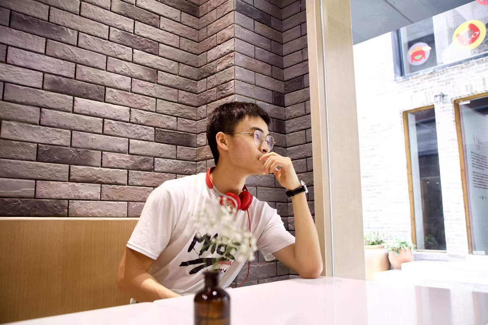

Yixian Tian
Age: 20 years old
Location: Beijing, Haidian
Political outlook: League member
School of graduation: Beijing University of Posts and Telecommunications
TEL: 14775376967
E-mail: tianyixian.nanshan@foxmail.com
Education
Beijing University of Posts and Telecommunications, IOT Engineering
Queen Mary University of London, IOT Engineering
Ranking: 2/181 (Top 1.1%)
Major courses: Data Structures (98), C language programming (100), Signals and Systems, Discrete Mathematics (92), Fundamentals of Electronic Systems (96), Linear Algebra (98), etc.
Achievements: First-class scholarship, "Merit Student" title, and others.
Work Experience
Assistant Research Internship, Zero Lab of Peking University (2024.3 - now)
- Reading and analyzing papers about adversarial attack and adversarial training.
- Attending, recording, and presenting at the weekly group seminar.
Leadership Experience
Class Monitor and League Branch Secretary
- Held more than 5 class meetings each semester.
- Acted as class representative and managed personnel records.
Vice President of Guangdong-Hong Kong-Macao Cultural Association in BUPT
- Organized community entertainment activities to promote Guangdong culture.
Awards & Honors
- H Award in the 2024 American Mathematical Contest In Modeling (MCM).
- First prize in the Third National University IOT Innovation Challenge.
- First prize in the "Internet+" project at the university level.
- Third prize in the provincial competition of Chinese Collegiate Computing Competition.
- Second prize in the university's Future Star English dubbing final.
Skills
- Programming: C, C++, Java, Python, SQL, Matlab, etc.
- Software: Office, LaTeX, SPSS, etc.
- Languages: English (CET-4: 581, CET-6: 492)
- Other: Industrial Internet-IoT Engineer Certificate, C1 driving license.